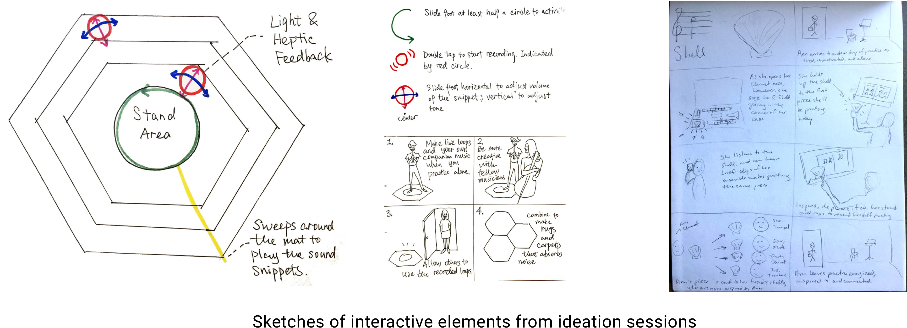

Musi
Musi, practice with your ensemble anytime, anywhere - at the tap of a foot.
- Project Brief
- 2017.9 ~ 2017.12
- Group Project (team of 4)
- My Role
- Researcher
- Product Designer
- 3D model Prototyper
- Method & Skills
- Observations & Interviews
- Brainstorming
- Cultural Probes
- User Enactments
- Prototyping
- Tools & Softwares
- Sketch
- Invision
- Arduino
- Rhino
- Laser Cutting
Problems
Problems that musicians have during practice and rehearsal:
Practice is a vital part of a musician’s life. On an average, music students practice about 4 hours a day. This practice regimen requires significant repetition, experimentation, monitoring, adjustment, and feedback from peers and teachers. While long time practicing alone can lead to frustration, group rehearsal can be hard to coordinate.
Potential solutions: what existing tools are dealing with?
- Some tools seek to facilitate real-time rehearsals between musicians dispersed geographically, but require a significant investment.
- Other tools use algorithms to analyze how accurately users hit certain pitches or rhythms.
How can we better support music students in their practice and rehearsal in terms of encouraging discussion and reflection?
Solution At a Glance
Formative Study

Observations & Interviews
We individually conducting 2 hour-long observations of the music practice wing at the music school. We came to understand that broadly, practice requires a significant repetition of scales, intervals, and excerpts from longer pieces. Most of the time musicians spend in practice is spent alone.
We conducted 2 in-depth interviews to broaden our understanding of the following questions:
- How can music technologies influence the behavior of musicians?
- What opportunities and constraints exist in this space?
- Which have been under- or over-explored?
“You don’t want to mess with education that has been refined over one thousand years”
-- Professor
“Classical music is derived from the palace, it is meant to be serious.”
-- Student Interviewee

Cultural Probes
To gain a deeper understanding of musicians’ attitudes towards technical innovation of musical instruments, clothing, and spaces. We chose to conduct a cultural probe.
Upon collection of the journals, we conducted short interviews to debrief and clarify their responses.
The probe includes 5 different activities:
- 10 things important to you as a musician (places, clothes, instruments, etc.)
- Instrument of the future: imagine, sketch & describe your vision of a futuristic instrument that you wish you had now
- Clothes of the future: Given unlimited budget and resources, how would you design clothes for your performance that will help you enhance the expression of your music?
- Room of the future: Imagine, sketch & describe your ideal practice rooms, and/or performance spaces
- Share past or new recordings of your practice sessions and performances on Google Drive or MBox

Key Insights
We used an affinity wall to cluster the quotes, drawings, and observation notes from our formative study.
- Classical musicians aren’t looking for radical transformations of their existing routines.
- Musicians are constantly striving to find intrinsic and extrinsic motivation to persevere.
- Live remote collaboration for musicians is still an unsolved problem.
- To use technology in music pedagogy, it has to monitor everything a human teacher would.
- Musicians seek ways like using feet to play accompanying tracks while practicing alone to hear harmonies and complex rhythms within their ensemble.
Ideation
Design Ideas
We individually sketched 14 concepts which we narrowed down by considering each design’s potential acceptability in the musical community, level of positive impact on practice, and lack of disruption in the practice space.

We found that 2 concepts complemented one another –
1. A foot-operated mat that would facilitate the recording, looping, and playing back of practice tracks for later review and reflection
2. A social network that would allow musicians to share recordings of their practice with their peers and instructors, thereby bringing their community into the practice room.
We merged them for further development.
User Enactments
However, what kind of form and types of interaction should the interactive mat have to accommodate different kinds of instruments?
We conducted user enactments to challenge our current ideas. We created a matrix of potential interaction modes, feedback types, and levels of system automation to brainstorm 5 use cases. We then used cardboard and paper to create low fidelity prototypes of various mat shapes and buttons with which participants could enact these use cases.

Findings:
- Different instruments have different design requirements due to size, shape and positioning
- Participants tend to tap their feet while playing to keep rhythm.
- Metronomes are important tools when practicing complex rhythms.
- Some participants wouldn’t want their recordings to be public.
- Participants want to control and play multiple parts at once, most said hearing up to 3 tracks at a time seemed manageable and helpful.
- Participants said they would find the process of organizing and reviewing large batches of tracks more manageable on a larger screen, like their phone or laptop, while the mat would be more useful for operating functions that more immediately support them as they play.
Iteration
We individually sketched new design ideas based on the insights from user enactments and came together to discuss. Our new ideas all point to the direction of a simpler, smaller foot interface and pairing the device with a display to enable more features with simple foot controls.

However, we could not reach a consensus on what kind of screen–speaker–mic combination should the device have. So, we decided to consider further variations of the device. We first revisited our selection criteria from ideation section and made some modifications based on our new findings. Then, we noted down the pros and cons of each combination based on these criteria.

Ultimately, we decided Design #4 best fit our evaluation criteria and would fit into not only the practice spaces utilized by classical musicians, but could also be suitable for musicians practicing contemporary styles (jazz, rock, etc) as well.
Final System Concept
We developed Musi to facilitate asynchronous group practice between classical musicians.
Musi is designed to be portable. Musicians are busy and already have to carry around their instruments; Musi removes the hustle of carrying all those speakers, microphones, laptops, and other devices currently used for recording. It can be folded, carried, and worn on your body like a bag. The mat and prism can be separated and placed at different places to adapt to the positioning of various instruments. Imagine: while playing the cello, you could put the mat on the floor while the prism sits on top of a table near you, without getting blocked by the large body of the instrument.

Key Features:
The Musi Prism
- Record and playback practice sessions
- Set and adjust tempo for metronome and recordings automatically with foot- tapping
- Automatically upload recordings to the cloud

The Musi Companion App
- Load and play companion music
- Share recordings with others
- Comment on recordings

Interaction Video
Prototype:
We used SketchUp to iterate on the shape of the product.
We used Waveform Playlist, an open source audio recording tool, to support our recording and playback features as well as to visualize the audio waveforms.
We used a Particle Photon to prototype the buttons on the physical device.
We prototyped the companion mobile app using Sketch and InVision.
Evaluation
After building our prototype, we evaluated our design with stakeholders in two contexts: at the Design Expo at the School of Engineering, and at the practice room of the Music School. From these evaluations, we were able to identify areas to drive future design work and help us realize an ideal concept.
- Flexibility
We were pleased to find that Musi was flexible enough for users to adapt it to their ideal positioning without sacrificing their technique and posture. - Recording Quality
Higher quality speakers and microphones would benefit Musi, as would adjustable sound input settings - Visual Feedback
Musi's buttons provide an audible click when pressed. Still, our current system interface does not provide visual feedback on the system status. Adding visual signifiers would aid both novice users as well as more advanced users who are focused on their music, not memorizing the arrangement of buttons.